RFID & 3G APN: Unwired / Infrastructure-Free Zones
Implementing secure wireless communication using Closed APNs, Microwave links, SOTI MDM, and dual RFID tagging systems for Damietta Port Authority (DPA).
1. The Challenge: Covering Unwired / Infrastructure-Free Water Zones
Damietta Port Authority (DPA) requires reliable, secure wireless communication to track containers and manage logistics across vast water areas and terminal docks. Traditional Wi-Fi is unreliable over water due to reflection and distance limitations. The solution requires a hybrid approach using cellular technology (3G/4G) and microwave backhaul links.
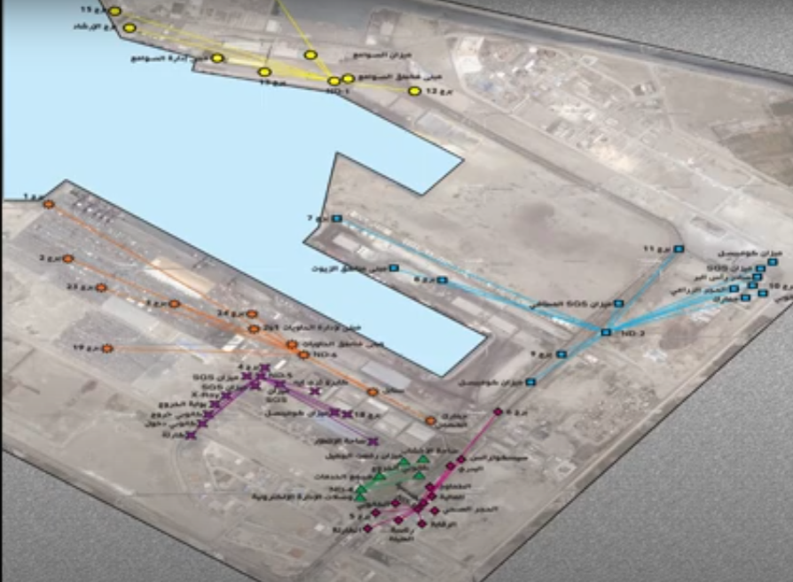
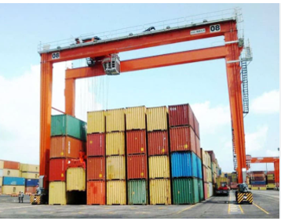
2. Closed APN & Microwave Architecture
To ensure maximum security and prevent interception, DPA utilizes a Closed APN (Access Point Name) over the 3G/4G network. A Closed APN acts like a private cellular network. Devices with authorized SIM cards cannot access the public internet; they are routed directly into DPA's internal datacenter.
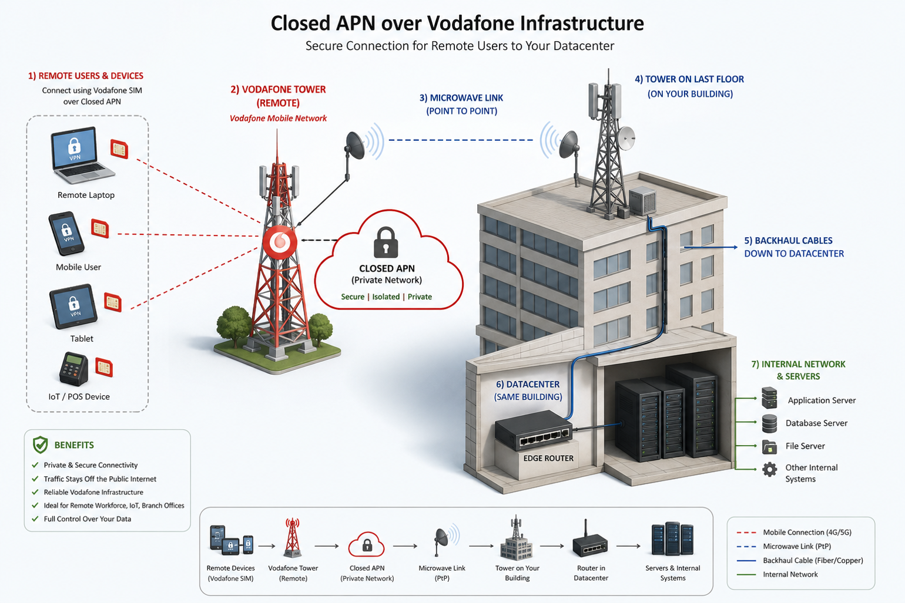
The cellular towers communicate with the DPA Datacenter via a dedicated Microwave Link. This bypasses the traditional telecommunications provider's backbone, providing a direct, high-speed, and highly secure connection to the internal network and servers.
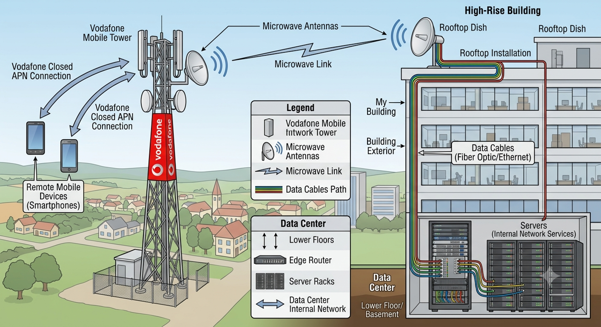
3. SOTI MDM & Vehicle Mount Terminals (VMT)
The port equipment (RTG Cranes, Reach Stackers, Trucks) is equipped with Vehicle Mount Terminals (VMTs) and Remote Data Terminals (RDTs). These ruggedized computers contain SIM cards connected to the Closed APN, allowing them to send real-time inventory data back to the datacenter over the water.
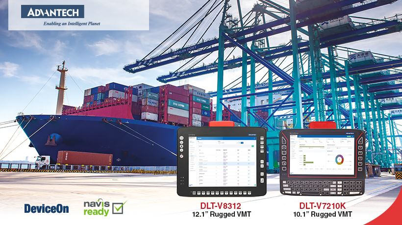
Because these devices are mobile and spread across a massive area, they are managed centrally using SOTI MobiControl (an Mobile Device Management system). SOTI allows the IT team to push updates, monitor device health, troubleshoot remotely, and secure the devices if they are tampered with.
VMT in action: A crane operator interacts with the RDT to log container transfers.

Device Ecosystem: SOTI manages a variety of rugged handhelds, Android phones, and Windows tablets used by port staff.
3. Centralized Management via SOTI MobiControl
Managing hundreds of mobile devices spread across cranes, trucks, and warehouses over a massive port area is impossible to do manually. DPA solves this by hosting a central SOTI MobiControl server inside their Datacenter. SOTI is an Enterprise Mobility Management (EMM) system that acts as the "brain" for the entire wireless terminal ecosystem.
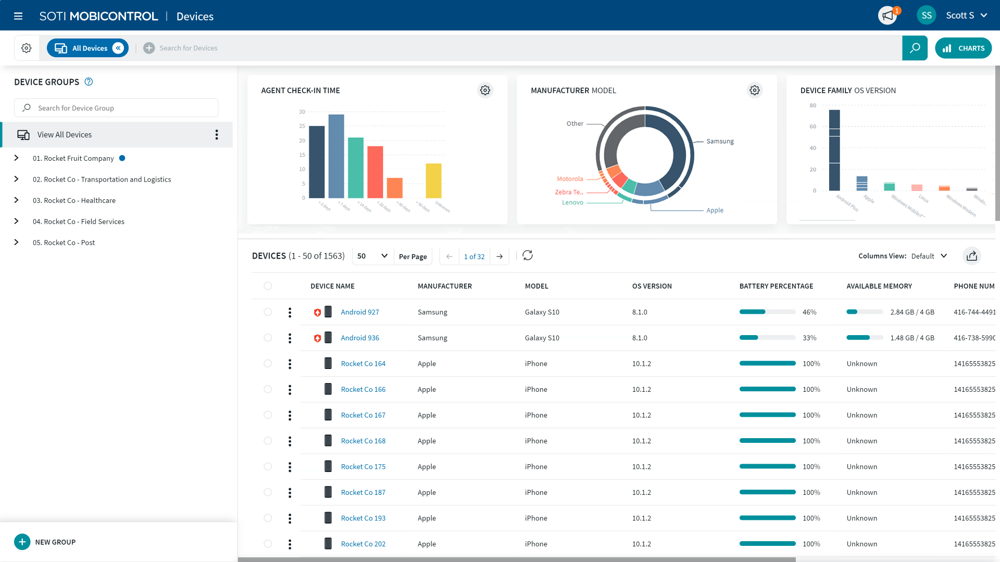

Device & SIM Management
Every Vehicle Mount Terminal (VMT) and Remote Data Terminal (RDT) has a SOTI agent installed. This agent communicates back to the server over the Closed APN, allowing the IT team to monitor and control:
- Device Health: Battery life, CPU usage, storage space, and app crashes on all VMTs and RDTs.
- SIM Card Status: SOTI monitors the cellular connection of each device. It tracks signal strength, data usage, and ensures the SIM is strictly connected to the authorized Closed APN. If a SIM is removed or loses connection, SOTI triggers an alert.
- Remote Control: If a crane operator experiences a software issue, the IT team can remotely view and control the VMT screen from the datacenter, fixing the problem instantly without climbing the crane.
Real-Time Monitoring
The SOTI dashboard provides real-time visibility into the entire fleet of devices. IT administrators can see exactly which devices are online, their current GPS location on the port map, and whether they are successfully transmitting RFID data back to the server.
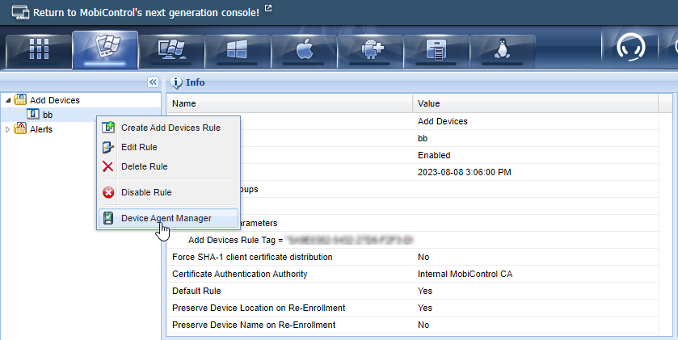
Central Server: The SOTI server hosted in the DPA Datacenter processes thousands of heartbeats and data packets from the field.
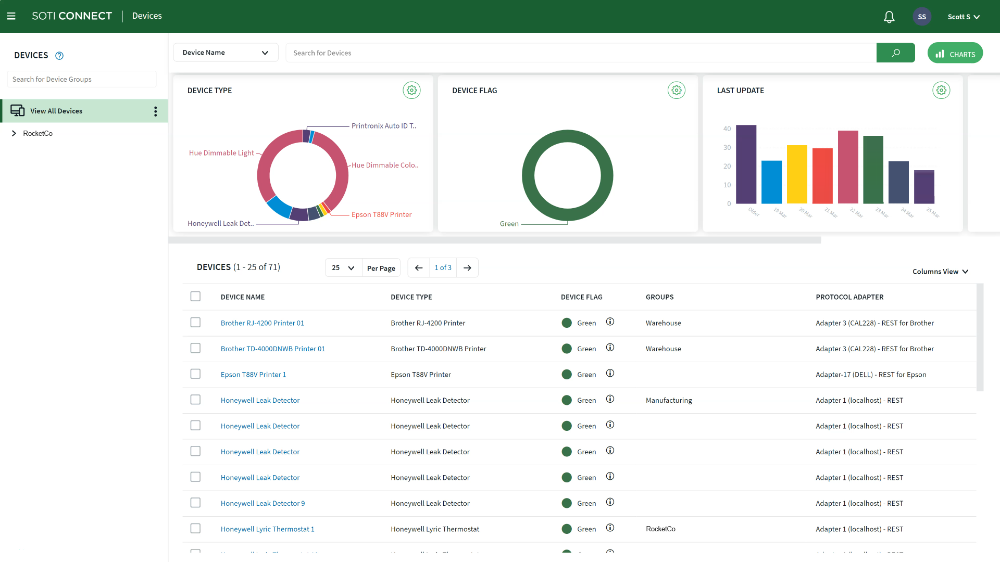
Managed Endpoints: SOTI secures and monitors rugged handhelds, VMTs, and Windows tablets used across the port.
Security & Lockdown
SOTI ensures that port devices are used strictly for work. Through "Kiosk Mode," devices are locked down so operators cannot access the public internet, install games, or change APN settings. This guarantees the devices remain secure and focused solely on RFID scanning and data transmission.
Enterprise RFID & Logistics Tracking
Exploring large-scale RFID network architecture, access control, active vs. passive tags, and real-time logistics tracking for ports and enterprise environments.
1. RFID Network Architecture
An enterprise RFID system is not just about handheld scanners; it requires a robust wired and wireless network backbone. Readers deployed at gates and loading docks must transmit massive amounts of tag data back to a central RFID Management Server hosted in a secure datacenter.
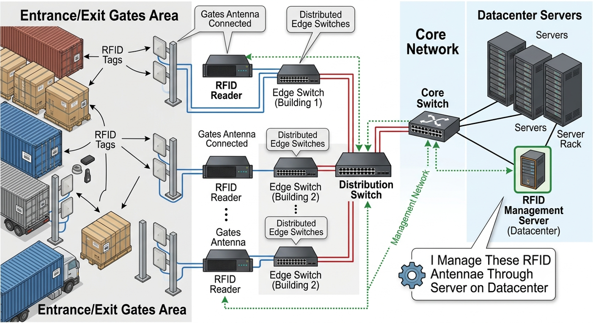
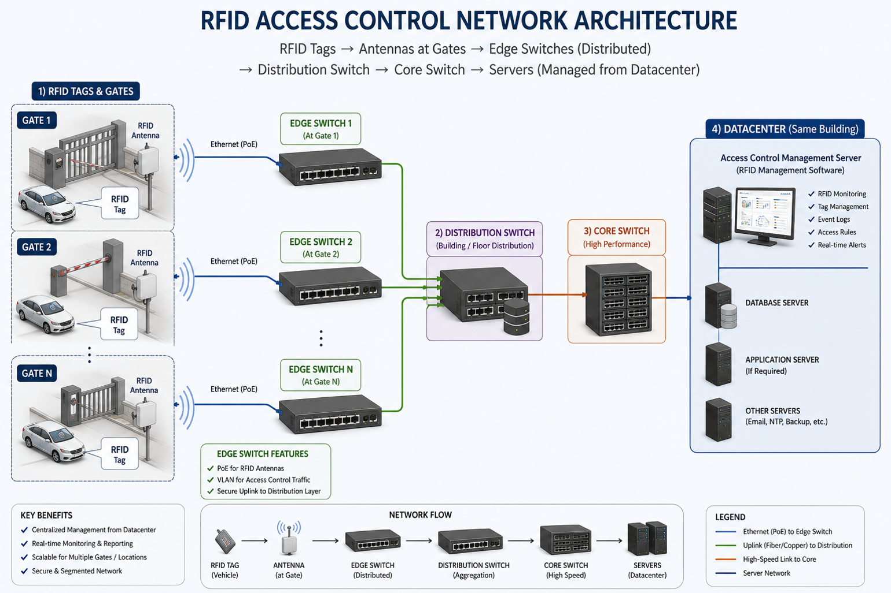
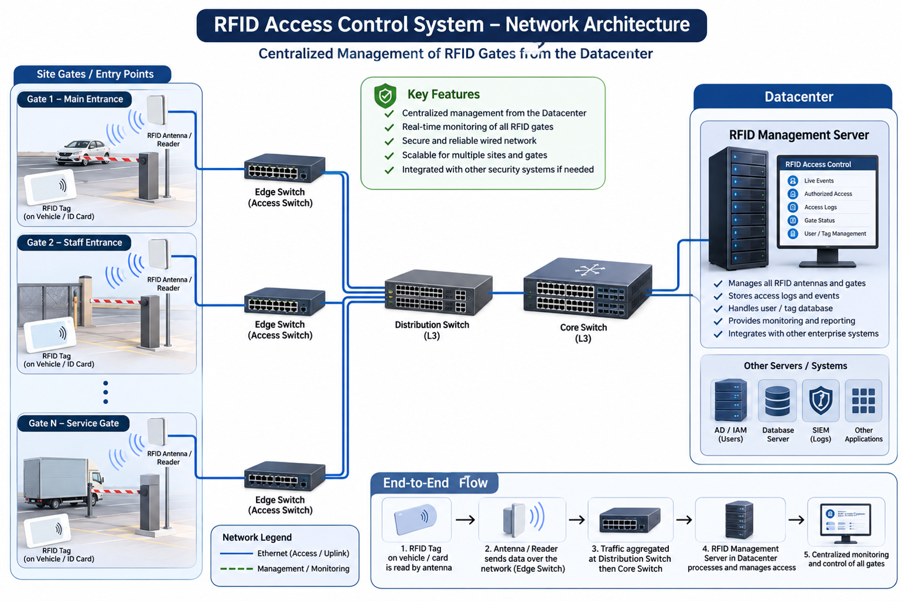
2. Active vs. Passive RFID Tags
Choosing the right type of RFID tag is critical for system performance. The choice depends on the required read range, environment, and budget.
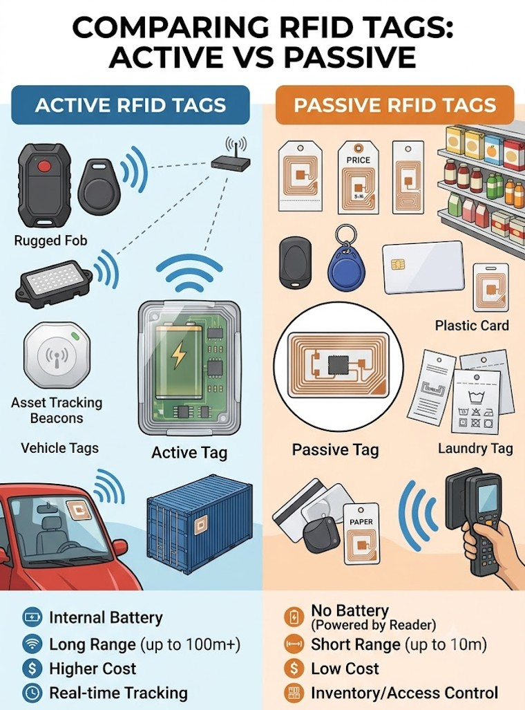
- Active RFID Tags: Powered by an internal battery. They can broadcast a signal up to 100+ meters. Ideal for tracking high-value assets, vehicles, and real-time location in large yards. Higher cost.
- Passive RFID Tags: Have no battery; they are powered by the electromagnetic energy emitted by the reader. Shorter range (up to 10m). Low cost, perfect for inventory control, access cards, and box tracking.
3. Vehicle Detection & Gate Automation
In logistics centers, RFID automates the entry and exit of trucks. As a truck approaches the gate, the RFID reader scans the windshield tag, automatically opening the boom gate and logging the arrival time without human intervention.
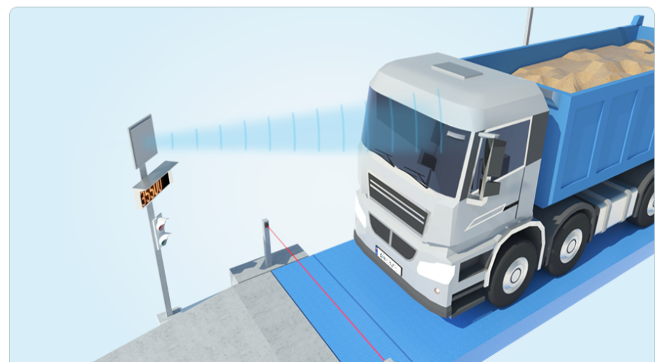
Gate Scanning: A truck passes through an automated detection zone using RFID and weight sensors.
Endpoint Scanning: A worker manually verifies a vehicle's RFID windshield tag using a handheld terminal.
4. Logistics Yard Management & Exit Processing
Once inside the yard, trucks are directed to specific loading zones or weighbridges. Upon completing delivery, the exit gate automatically verifies that all transit documents and excise gate passes have been issued before letting the truck leave.
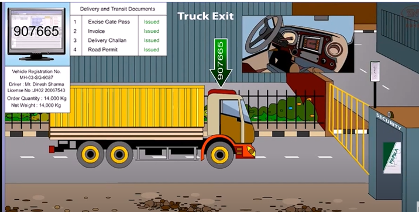
Yard Management: A top-down view of a logistics center showing waiting areas, loading zones, and weighbridges.
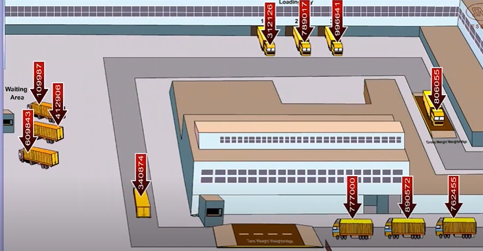
Exit Verification: The system verifies driver info and ensures all Delivery and Transit Documents are "Issued" before opening the Truck Exit.
5. Real-Time Goods Tracking
RFID data combined with GPS and telematics allows enterprise command centers to track goods in real-time as they move between cities or port terminals. The system logs trip details, quantity loaded, and expected completion times, sending automatic location alerts to the dashboard.
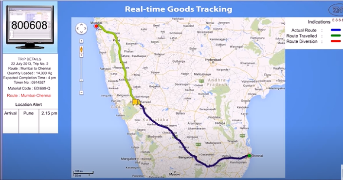
6. RFID Hardware & Reader Connectivity
Fixed RFID readers are industrial computers. They feature multiple external antenna ports to cover wide lanes, Ethernet for network connectivity, and GPIO (General Purpose Input/Output) ports to trigger physical devices like boom gates or traffic lights when a tag is read.
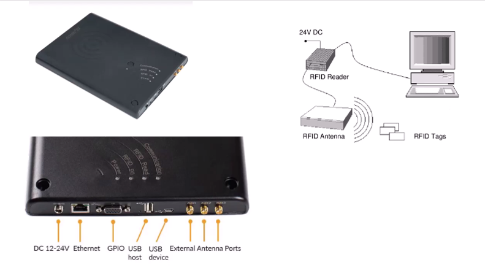
Integration Summary
The complete ecosystem operates seamlessly:
- 1. Hardware Layer: Fixed and handheld readers scan Active or Passive tags.
- 2. Network Layer: Data travels from Edge to Core switches into the Datacenter.
- 3. Application Layer: Servers process the data, updating yard maps and verifying exit documents.
- 4. Management Layer: Real-time dashboards provide visibility, while systems like SOTI ensure the handheld devices remain secure and updated.
4. RFID Infrastructure: Tags & Readers
Radio Frequency Identification (RFID) is the core technology used by DPA to automatically track containers, trucks, and cargo across the port. Unlike traditional barcodes which require line-of-sight and manual scanning, RFID allows multiple items to be scanned simultaneously from a distance, even through obstacles like fog, dust, or rain—making it perfect for harsh marine environments.
Types of RFID Tags Used at DPA
The port utilizes two distinct types of tags depending on the asset being tracked:
- Rugged RFID Tags (Heavy-Duty):
These tags are encased in hard, industrial-grade plastic or epoxy resin. They are bolted, welded, or riveted directly onto steel shipping containers, truck chassis, and crane spreaders.- Durability: Built to withstand extreme impacts, saltwater corrosion, UV radiation, and heavy vibrations.
- Lifespan: Reusable and designed to last for the 10-15 year lifespan of a shipping container.
- Printed RFID Tags (Smart Labels):
These are adhesive labels generated by specialized RFID printers. They contain an embedded RFID chip and antenna, alongside a printed barcode and human-readable text.- Use Case: Applied to individual pallets, cargo boxes, and internal port documentation.
- Efficiency: Allows for dual-tracking (RFID scanning and manual barcode scanning) and easy integration with warehouse management systems.

RFID Printers
To create the Printed RFID Tags, the port uses industrial RFID printers (such as Zebra or Honeywell). These printers do more than just print ink; they encode the specific container or cargo data (like destination, weight, and contents) directly onto the RFID chip embedded in the label while simultaneously printing the visual barcode.
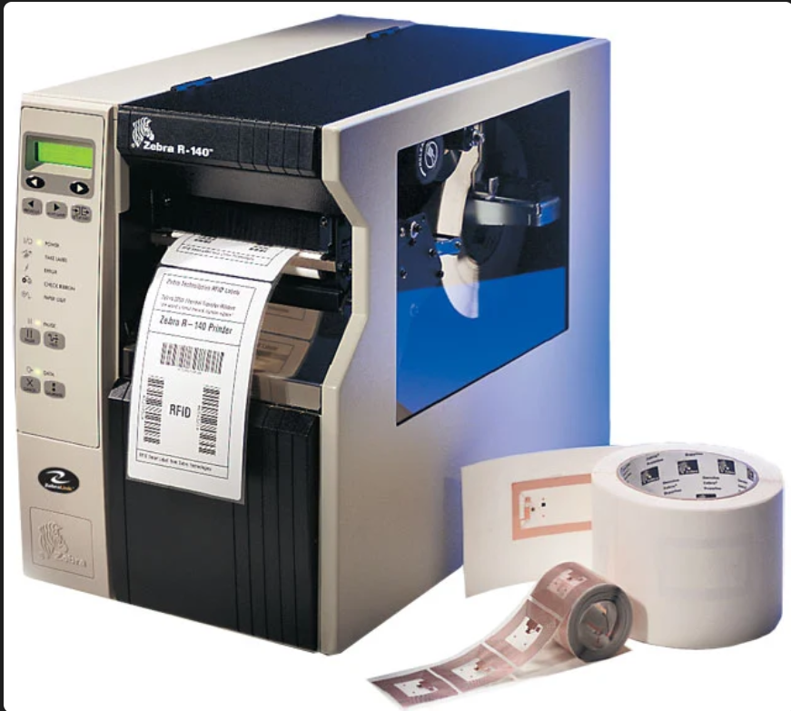
RFID Readers (Interrogators)
Readers are the devices that emit radio waves to activate the tags and read their data. DPA deploys readers in two formats:
- Fixed Readers (Mounted on Cranes & Gates): Permanently installed on RTG cranes and port entrance gates. As a truck drives past a gate or a crane picks up a container, the fixed reader automatically scans the Rugged Tag without the operator needing to do anything. This data is sent directly to the Vehicle Mount Terminal (VMT).
- Handheld Readers (Mobile Scanners): Used by port workers on the ground for inventory checks, locating specific containers in the yard, and scanning Printed Tags on pallets inside warehouses.
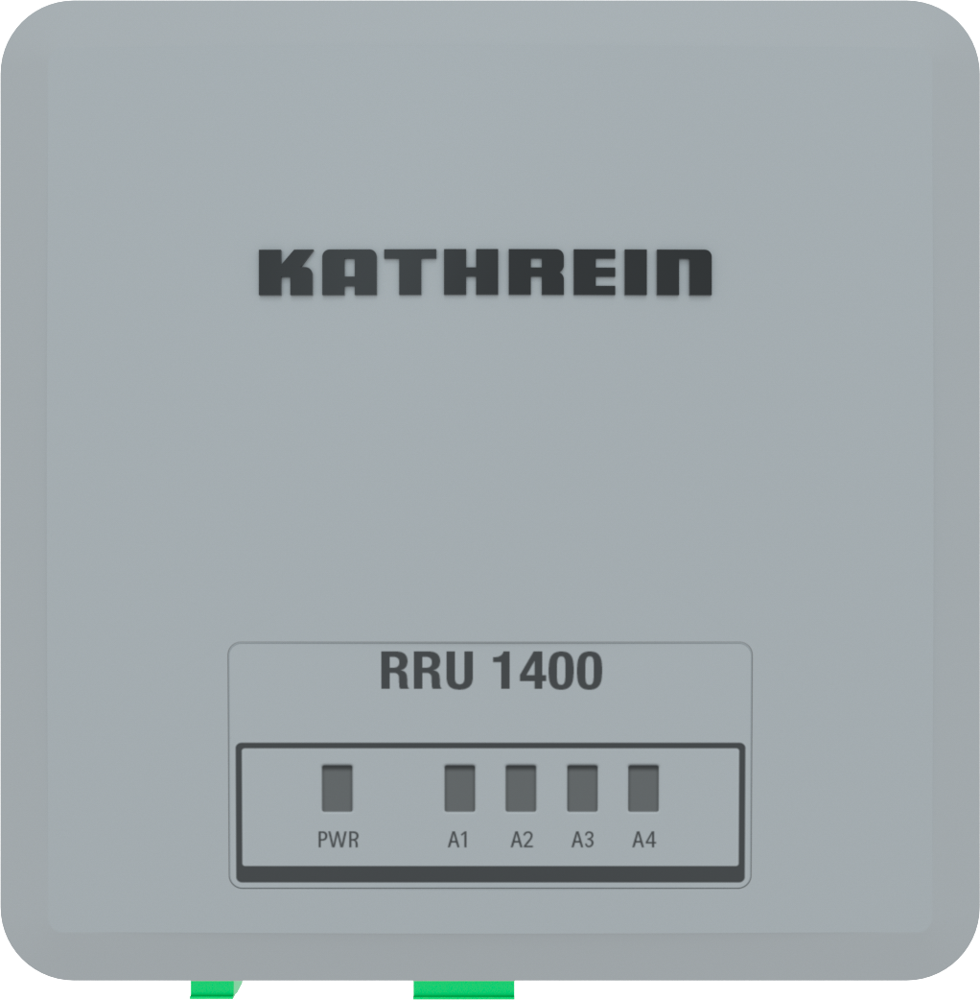
The Complete Data Flow
Understanding how RFID fits into the broader wireless network is crucial. Here is the step-by-step lifecycle of a single scan:
- 1. Capture: A crane's fixed reader (or a worker's handheld) scans a Rugged or Printed RFID tag on a container.
- 2. Process: The reader sends the tag data via cable to the Vehicle Mount Terminal (VMT) inside the crane cabin or truck.
- 3. Transmit: The VMT uses its internal SIM card to transmit the data securely over the 3G/4G Closed APN network.
- 4. Backhaul: The cellular tower beams the data via a dedicated Microwave Link directly to the DPA Datacenter roof.
- 5. Update & Manage: The internal servers instantly update the container's location in the port management software, while SOTI MDM ensures the VMT remains secure, updated, and connected.
Crosstalk Server & RFID Infrastructure
Understanding how a central Crosstalk Server acts as the middleware brain to manage, filter, and route data from hundreds of RFID readers across the enterprise network.
1. The Crosstalk Server (RFID Middleware)
In a massive deployment with hundreds of RFID readers, connecting readers directly to a database or ERP system will instantly crash the backend. Readers generate too much "noisy" data (e.g., reading the same tag 50 times a second). The Crosstalk Server solves this by acting as an intelligent middleware layer hosted securely in the datacenter.
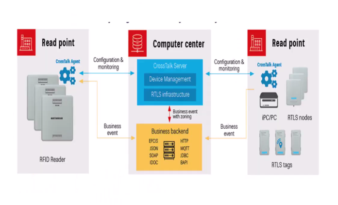
The Crosstalk Server's primary job is data filtering and device management. It receives raw data from all readers, filters out duplicates (deduplication), and only forwards meaningful business events (e.g., "Container X entered Gate Y") to the enterprise application.
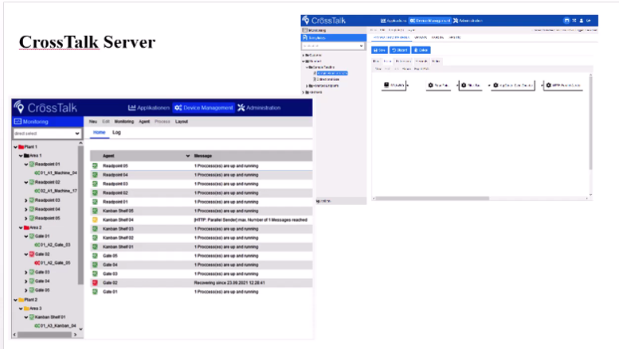
- Centralized Management: IT staff can configure, reboot, and push firmware updates to all readers from the Crosstalk dashboard.
- Edge Filtering: The server filters out redundant reads, ensuring the database isn't overwhelmed.
- Alerting: If a reader goes offline or a antenna is cut, the Crosstalk server immediately alerts the IT team.
2. Readers to Infrastructure Switches
At the edge of the network (gates, docks, warehouses), fixed RFID readers are installed. These readers do not connect via Wi-Fi; they require highly reliable, wired Ethernet connections to Infrastructure (Edge) Switches.
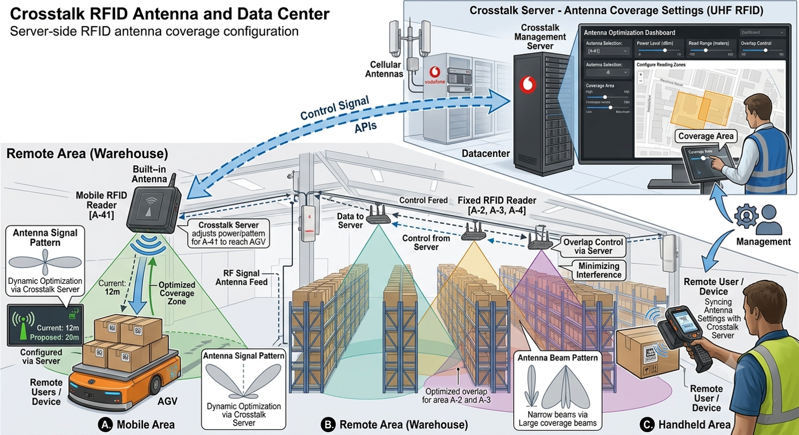
These edge switches are usually ruggedized to survive harsh outdoor environments. They provide Power over Ethernet (PoE) to the readers, meaning a single Ethernet cable provides both the data connection and the electrical power to the reader. The edge switches then aggregate this traffic and uplink it via fiber optic cables back to the datacenter.
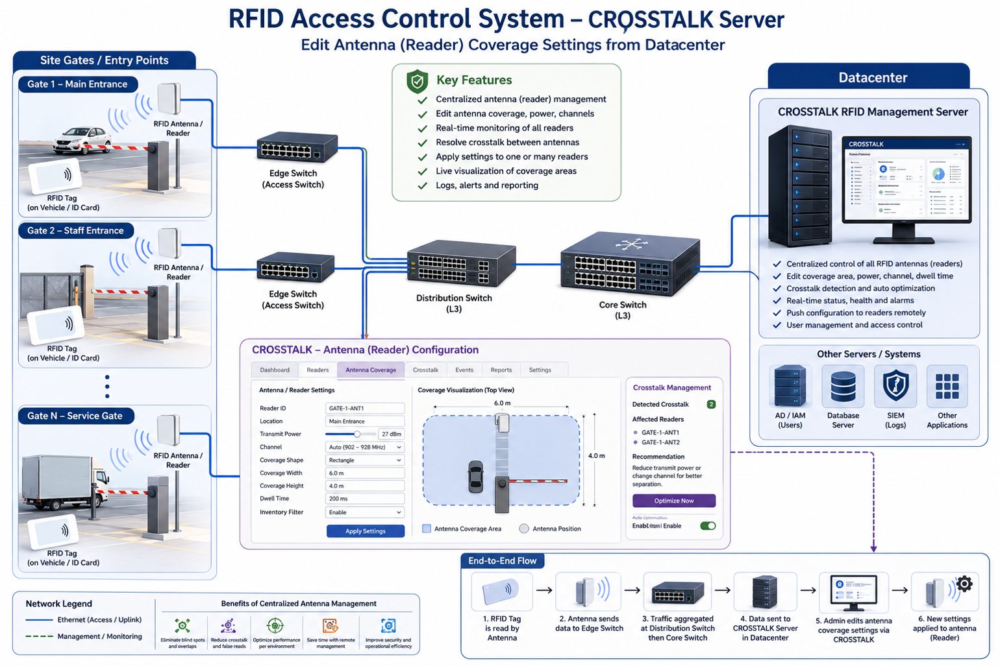
The Complete Data Path
Understanding the physical flow of an RFID read is crucial for troubleshooting:
- 1. The Edge: A truck passes a gate. The fixed RFID Reader scans the tag.
- 2. The Switch: The reader sends this data via an Ethernet cable to the local Infrastructure (Edge) Switch.
- 3. The Core: The Edge Switch uplinks the data through Distribution switches, routing it across the network backbone to the Datacenter.
- 4. The Brain: The Crosstalk Server receives the data, filters out the noise, and translates it into a business event.
- 5. The Backend: The Crosstalk Server forwards the clean event to the ERP/WMS software to update the inventory dashboard.